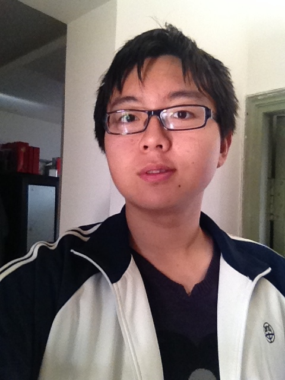
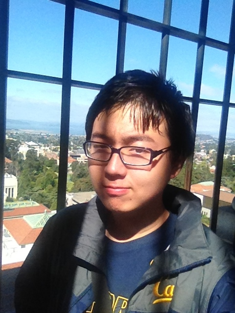

Kip Fulbeck describes in the introduction of the book Part Asian 100% Hapa that he is asked a single question almost every day of his life, “What are you?” (p. 11). He further explains how he thinks about this issue, and he provides thousands of answers from other mixed people to this question in his book. It is clearly shown that being hybrid not just means a different physical appearance, it also involves an ambivalent feeling of belonging, a contradiction of cultural expectations and varied attitude people possess towards you.

Mixed people often struggle to identify their true belonging. They are not sure about which place is their real hometown and who are their compatriots. Some of them choose to identify themselves with one race more closely but seldom tell other people about their second identity. (e.g. the boy on page 30) The boy in the above image decides to identify himself as Chinese rather than Danish. Some of them would rather believe that they are a part of the growing multiracial community. (e.g. the lady on page 142) (the lady on page 174) (e.g. the women on page 232) (e.g. the women on page 252). And some of them are still not sure about how he (she) should categorize himself (herself). (e.g. the man on page 60) (e.g. the man on page 168). Through these response, it can be obviously observed that being mixed means a life-long process of finding one’s own belonging.
 Being racially mixed also means being culturally mixed. Personally, I, as an international student, find out that cultural difference often leads to a fundamental contradiction of ideology. This contradiction can be seen in many tiny elements of life. For example, students in the US are encouraged to ask any questions to the professor while listening to a lecture and even challenge some authoritative ideas. They believe critical thinking is one of the most important skills a student should possess. However, I was educated my whole life to only listen to the teacher and follow the instructions when I was back in China. The school characterizes the students who follow the “rules” as “good kids” and those who do not as “bad kids”; they reward and honor the good and blame and punish the bad. Asking questions during the lecture is interpreted as interrupting the class and challenging the professor would be viewed as extremely disrespectful. Therefore, I was quite shocked by the different US culture and struggled to find my own position for quite a long time. I believe the root of this difference originates from the culture. People in the US really care about freedom, justice and right while people in China think highly of respect, honor and history. This difference in culture and value system leads to this difference of behavior and how other people judge this behavior. Being cultural mixed brings two points of views at the same time to the person, leveling him up to a higher dimension of thinking about problems, but also post a big challenge to him along the road of life.


One’s physical appearance is not as important as how other people in this world “interpret” him according to his physical appearance. In the book, The Absolutely True Diary of a Part-Time Indian, the protagonist Arnold Spirit left the reservation he grew up and went to a high school that was full of white kids. From then on, he was considered as an “alien” by both his compatriot in the reservation, including his best friend, and his classmates, the white kids. The people on the reservation thought that he has betrayed them and thus alienated him; the students in the high school have never seen Native American before, labeled him as “weird”, and thus alienated him as well. It was really a hard time for Arnold: he had to fight to make people on the reservation believe that he still loved the reservation and make student in the high school recognize and respect him. I believe the situation of racially mixed people is quite similar to the situation Arnold faced, expect for the degree, or extend. People do have bias judging mixed people due to their physical appearance, and could alienate them because of that; thus, being hybrid means that one must prepare his mind to be strong enough to face the tough situations he could possibly encounter.
What does it mean to be “mixed”? It means a long and hard journey of finding one’s own belonging, a fight to reconcile two possibly contradicting cultural value and expectation, and a strong mind to confront other people’s biased view of him. They are more mature than normal people because of their struggles, but they are also having a hard time; we should then recognize their existence fairly and give them our highest respect and admiration for their struggles.